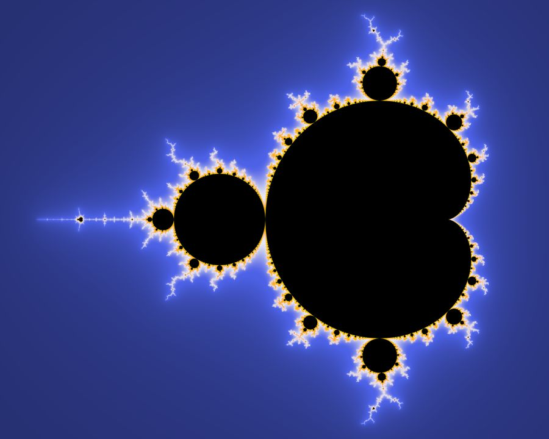
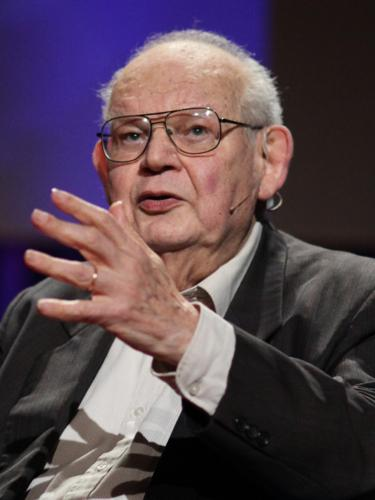

数学・論理
たった1行の式を繰り返すだけで、無限に複雑な図形が生まれる。複雑さは、複雑なルールから生まれるわけではない。
ブノワ・マンデルブロがIBMのコンピュータで初めてこの集合を可視化した年。
同年、WHOが天然痘の根絶を宣言。モスクワ五輪が西側諸国のボイコットの中で開催。CNNが世界初の24時間ニュースネットワークとして開局した。
フラクタル（fractal）という語は、ラテン語の fractus（砕けた、壊れた）に由来する。マンデルブロ自身が1975年に造った。
木の枝を見たことがあるだろう。幹から大きな枝が分かれ、そこからまた小さな枝が分かれ、さらにそこから細い枝が伸びる。そのどれもが、不思議と似た形をしている。川の流域を上空から見下ろしても、肺の気管支を医学書で見ても、稲妻の写真を引き伸ばしても、似たような枝分かれのパターンに出会う。
この「部分が全体に似ている」という性質は、自然界のいたるところにある。海岸線を拡大しても、衛星写真と同じようなギザギザが続く。ブロッコリーの小房を折っても、元の形と見分けがつかない。自然は滑らかな直線でできてはいない。
この繰り返しの構造を、たった1行の数式で生み出す方法がある。それが z → z² + c だ。
ひとつの式が無限の複雑さを生む瞬間を、ブラウザの中で自分の手で体験する。拡大するたびに現れる新しい構造を、目で確かめてほしい。
私たちが日常で使う計算は、だいたい一方通行だ。3 × 4 = 12。答えが出たら、それで終わる。だが数学には、答えを次の計算の入力に戻すという操作がある。これを反復（イテレーション）反復（iteration）
同じ操作を繰り返し適用すること。出力を次の入力として再利用する。フラクタル幾何学・力学系理論の基礎的操作。という。たとえば「2倍にする」を反復すると、1 → 2 → 4 → 8 → 16 … と値が爆発的に大きくなる。「半分にする」を反復すると、1 → 0.5 → 0.25 → 0.125 … とゼロに向かって縮んでいく。
反復のルールが単純でも、結果がどうなるかは一概に言えない。発散する（無限大に飛んでいく）のか、収束する（ある値に落ち着く）のか、それとも同じ値の間を行ったり来たりするのか。ルールは同じでも、最初の値が少し違うだけで結末が変わる。これが反復の面白さであり、怖さでもある。
マンデルブロ集合の式はこうだ。z → z² + c。z の初期値はゼロ。c は複素数複素数（complex number）
実数と虚数を組み合わせた数。a + bi の形で表される（i は虚数単位、i² = −1）。複素平面では横軸が実数部、縦軸が虚数部を表す。で、複素平面上のどこかの点を表す。
ここが大事なところだ。この式の c は、平面上の「座標」そのものだ。碁盤の目のように点が並んだ平面を想像してほしい。左上の点、右下の点、真ん中の点——それぞれの点が自分だけの c の値を持っている。座標は「横の位置」と「縦の位置」の2つの数で表される。数学ではこの横を「実数部」、縦を「虚数部」と呼び、縦の数には i という記号を付ける。i は「虚数単位」と呼ばれるもので、ここでは深く考えず「これは縦方向の座標ですよ」という目印だと思ってほしい。たとえば c = 0.3 + 0.5i なら、「横に0.3、縦に0.5」の位置にある点だ。
そして z は「計算の途中経過」だ。最初はゼロから始まって、計算するたびに値が変わっていく。たとえば c = 1 の点では z は 0 → 1 → 2 → 5 → 26 … とどんどん膨れ上がる。c = −1 の点では z は 0 → −1 → 0 → −1 → 0 … と穏やかに行き来する。式の構造は同じだが、点ごとに足す数（= c = その点の座標）が違うので、結末がまるで変わる。ある座標の点では3回で暴走し、隣の点では200回粘り、さらに隣の点は永遠に暴走しない。この違いが、最終的にあの複雑な図形を描き出す。永遠に暴走しなかった点を黒く塗り、暴走した点に色を付ける——こうして浮かび上がる「黒い領域」がマンデルブロ集合だ。
具体的に見てみよう。いくつかの c で式を実際に回すとこうなる。
| c の値 | z の動き（最初の5回） | どうなった？ |
|---|---|---|
| c = 0 | 0 → 0 → 0 → 0 → 0 | ずっと 0 のまま。暴走しない → 黒く塗る |
| c = −1 | 0 → −1 → 0 → −1 → 0 | 0 と −1 を行き来する。暴走しない → 黒く塗る |
| c = 1 | 0 → 1 → 2 → 5 → 26 | 数回で爆発的に増大。暴走する → 黒く塗らない |
| c = i（虚数） | 0 → i → −1+i → −i → −1+i | ループに入る。暴走しない → 黒く塗る |
| c = 0.3 + 0.5i | 0 → 0.3+0.5i → −0.16+0.8i → … | ある範囲に収まる。暴走しない → 黒く塗る |
このように、「暴走しなかった c」を黒く塗り、「暴走した c」は暴走するまでにかかった回数に応じて色を付ける。これを複素平面上のすべての点に対して実行すると、あのカブトムシのような黒い図形——マンデルブロ集合——が浮かび上がる。

Fig. 1 — マンデルブロ集合の全体図。中央の心臓形（カーディオイド）が本体、左に接する円が「頭部」。黒い領域が暴走しなかった c の集まり（原図: Wolfgang Beyer, Ultra Fractal 3, CC BY-SA 3.0）。
ここで一つだけ補足しておく。複素平面とは、数を2次元で表す地図のようなものだ。横軸が通常の数（実数部）、縦軸が虚数部にあたる。たとえば c = 0.3 + 0.5i は、横に0.3、縦に0.5の位置にある点だ。虚数と聞くと身構えるかもしれないが、ここでは単に「数を平面上の点として扱える」と理解すれば十分だ。
マンデルブロ集合を描くとは、この複素平面の「地図」を塗り分ける作業にほかならない。すべての点 c に対して式を回し、暴走しなかった点を黒く塗る。そして境界上——暴走するかしないかの瀬戸際——にある点の周辺が、あの精緻な模様を描き出す。
マンデルブロ集合の境界を拡大すると、全体と似た形が何度でも現れる。この「部分が全体に似ている」という性質を自己相似性という。そして、自己相似性をもつ複雑な図形を総称してフラクタルフラクタル（fractal）
自己相似性をもつ複雑な図形の総称。ラテン語 fractus（砕けた）に由来し、マンデルブロが1975年に造語した。海岸線、木の枝分かれ、血管のネットワークなど、自然界のいたるところにフラクタル的構造が見られる。と呼ぶ。マンデルブロが1975年にラテン語の fractus（砕けた）から造った言葉だ。
フラクタルの典型的な例が「海岸線の長さ」の問題だ。海岸線を地図で測ると、物差しの長さを短くすればするほど、入り組んだ部分を拾って全長が伸びていく。理論上は「正確な長さ」が存在しない。この不思議な性質はマンデルブロ集合の境界にもそのまま当てはまる。フラクタルと海岸線の関係については別の記事で詳しく扱うが、ここではまず、マンデルブロ集合という「フラクタルの中のフラクタル」を体験することに集中しよう。
✕ よくある誤解
マンデルブロ集合の複雑な模様は、複雑なプログラムで描かれている
○ 実際は
式は z → z² + c の1行だけ。色は「何回で暴走したか」で決まる。複雑さはルールの複雑さからではなく、反復そのものから生まれる
✕ よくある誤解
マンデルブロ集合はコンピュータが作り出した人工物だ
○ 実際は
集合の形状は数学的に決定されており、コンピュータ以前から存在していた。コンピュータは「人間の目に見えるようにした」だけだ
✕ よくある誤解
拡大していくと、いつかは同じ模様の繰り返しになる
○ 実際は
自己相似だが厳密には反復ではない。拡大するたびに「似ているが異なる」新しい構造が無限に現れ続ける
まず、反復が何をしているのかを手で触って確かめてみよう。下のツールに好きな c の値を入れて「反復する」を押すと、z がどう変化していくかがわかる。c = 0 や c = −1 なら穏やかだが、c = 1 を試すと値が一瞬で爆発する。境界付近の値——たとえば c = 0.25 や c = −0.75——を試すと、暴走するかしないかの際どい均衡が見えてくるはずだ。
この反復を、複素平面のすべての点に対して実行する。暴走しなかった点を黒く塗り、暴走した点に色を付ける。すると地図が浮かび上がる。それがマンデルブロ集合だ。
下のキャンバスに描かれているのが、マンデルブロ集合の全体像だ。黒い部分が「暴走しなかった c」の集まり。カラフルな部分は「暴走した c」で、色は暴走するまでにかかった反復回数を表している。クリックするとその場所を中心に拡大できる。黒と色の境界線——つまり「暴走するかしないかの際」——の近くをクリックしてみてほしい。拡大するたびに、見たことのない構造が現れるはずだ。
マンデルブロ集合の境界には、研究者たちが名前を付けた有名な領域がいくつかある。「シーホースの谷」（Seahorse Valley）はその一つで、本体の心臓形と円形の接合部付近（座標 −0.75 + 0.1i あたり）に広がる。タツノオトシゴの尾のような渦巻きが無限に連なる、特に美しい領域だ。上のボタンでジャンプできる。
何度か拡大した人は気づくはずだ。どこまで拡大しても、「そこで終わり」がない。新しい渦巻き、新しい触角、新しいミニチュアのマンデルブロ集合が、次から次へと姿を現す。同じ形は二度と出てこないが、どこか全体に似ている。これが自己相似性自己相似性（self-similarity）
構造の一部を拡大すると、全体と似た形が現れる性質。厳密な自己相似（完全に一致する）と統計的自己相似（傾向が似ている）がある。マンデルブロ集合は後者。だ。
マンデルブロ集合の複雑さは、「境界」に集中している。集合の内部（黒い部分）は静かだ。外部（色のついた部分）も、遠くへ行けば行くほど単調に暴走する。だが境界線——集合の内側と外側の「際（きわ）」——は、文字通り無限に複雑だ。
数学者の志々倉光弘志々倉光弘（Mitsuhiro Shishikura）
日本の数学者。京都大学教授。1998年にマンデルブロ集合の境界のハウスドルフ次元が2であることを証明した。複素力学系の世界的研究者。は1998年に、マンデルブロ集合の境界のハウスドルフ次元ハウスドルフ次元
図形の「複雑さ」を測る尺度。直線は1次元、平面は2次元。マンデルブロ集合の境界はトポロジー的には「線」（1次元）だが、ハウスドルフ次元は2。これは「線でありながら面と同じくらい複雑」という意味だ。がちょうど2であることを証明した。ハウスドルフ次元とはフラクタルの「複雑さ」を数値で表す尺度で、直線は1、平面は2にあたる。マンデルブロ集合の境界は線なのに、この値が2。つまり線でありながら、面のように空間を埋め尽くすほど入り組んでいるということだ。
なぜ境界が複雑になるか — 3つの仕組み
カオス的感受性
ほんの少しの違いが、まったく異なる結末を生む
c の値がほんのわずか——たとえば 0.00001 だけ——違うだけで、反復の結末が「暴走しない」から「暴走する」に変わることがある。この感受性が、境界をどこまでも細かく入り組ませる。天気予報が長期的に当たらないのと同じ原理（カオス理論）が、ここでも働いている。
ミニ・マンデルブロの出現
拡大すると全体の縮小コピーが現れる
境界を拡大していくと、本体のマンデルブロ集合にそっくりな小さなコピー——「ミニ・マンデルブロ」——が無数に見つかる。数学者ドゥアディとユバールは1980年代にこれらが「極細のフィラメント（糸）」で本体と繋がっていることを証明した。マンデルブロ集合は、バラバラに見える「島」も含めてすべてが一つに繋がっている。
ジュリア集合との対応
マンデルブロ集合はジュリア集合の「地図」である
複素平面上のすべての点 c には、対応するジュリア集合がある。c がマンデルブロ集合の内部にあれば、そのジュリア集合は一つながりの形になる。外部にあれば、粉々の「塵」になる。つまりマンデルブロ集合は、あらゆるジュリア集合の性格を一枚の地図にまとめたものだ。このことが、境界付近の複雑さをさらに深くしている。
マンデルブロ集合の背後には、一世紀にわたる数学の物語がある。
1917〜18年
ジュリアとファトゥの先駆的研究
第一次大戦中のフランスで、ガストン・ジュリアとピエール・ファトゥが複素力学系の反復を研究。ジュリア集合の基礎を築いた。しかしコンピュータのない時代、その視覚的な複雑さは誰にも見えなかった。
1975年
マンデルブロが「フラクタル」を名づける
IBMの研究員ブノワ・マンデルブロが著書『Fractals: Form, Chance and Dimension』で「フラクタル」という語を導入。海岸線の長さ、綿花価格の変動、電話回線のノイズに共通する不規則なパターンの研究をまとめた。
1978年
ブルックスとマテルスキが初めて描画
ロバート・ブルックスとピーター・マテルスキがクライン群の研究の一環として、マンデルブロ集合に相当する図を初めて描いた。ただし粗い点描で、その意味は十分に認識されていなかった。
1980年3月1日
マンデルブロがIBMで集合を可視化
ニューヨーク州ヨークタウン・ハイツのIBM トーマス・J・ワトソン研究所で、マンデルブロが初めて高品質な画像を生成。古いテクトロニクスのプリンタが紙の上に打った点の集まりを見て、マンデルブロは「自分の想像力では、これほどのものは作れなかった」と語った。
1982年
『フラクタル幾何学』出版
マンデルブロの代表作『The Fractal Geometry of Nature』が出版。フラクタルを数学の専門家だけでなく一般の人々にも届けた。「プログラムのアーティファクトだ」と切り捨てていた批判者たちを沈黙させた。
1985年
Scientific American の表紙に
ブレーメン大学のペイトゲンとリヒターが生成した画像がScientific Americanの表紙を飾り、マンデルブロ集合は一般社会に爆発的に広まった。パーソナルコンピュータの普及と重なり、フラクタルはポップカルチャーの一部になった。
1995年
アーサー・C・クラークがドキュメンタリーを制作
SF作家アーサー・C・クラークがドキュメンタリー『Fractals: The Colours of Infinity』をナレーション。デヴィッド・ギルモア（ピンク・フロイド）がサウンドトラックを担当した。クラークは集合を「数学の歴史全体の中でもっとも驚くべき発見の一つ」と呼んだ。

ブノワ・B・マンデルブロ
Benoît B. Mandelbrot · 1924–2010
ポーランド生まれのフランス系アメリカ人数学者。IBMでフラクタル幾何学を創始。「雲は球ではなく、山は錐ではなく、海岸線は円ではない」と述べ、自然界の「粗さ（roughness）」を数学的に記述する道を切り拓いた。75歳でイェール大学史上最高齢のテニュアを取得。
マンデルブロ集合が私たちに見せているのは、ある種の逆説だ。たった1行の式——z → z² + c——を繰り返すだけで、人間の想像力を超える複雑さが立ち現れる。複雑さの源泉は、ルールの複雑さではない。反復そのものが、秩序と混沌の境界に果てしない構造を編み上げる。
"Exploring this set I certainly never had the feeling of invention. I never had the feeling that my imagination was rich enough to invent all those extraordinary things on discovering them. They were there, even though nobody had seen them before."
「この集合を探索しているとき、何かを発明しているという感覚はまったくなかった。あれほど途方もないものを自分の想像力で作り出せたとは、到底思えなかった。それらはもともとそこにあったのだ——ただ、誰もまだ見ていなかっただけだ。」
— ブノワ・マンデルブロ（ドキュメンタリー『Fractals: The Colours of Infinity』1995年でのアーサー・C・クラークとの対話より）
"Clouds are not spheres, mountains are not cones, coastlines are not circles, and bark is not smooth, nor does lightning travel in a straight line."
「雲は球ではなく、山は錐ではなく、海岸線は円ではなく、樹皮は滑らかではなく、稲妻も直線では走らない。」
— ブノワ・マンデルブロ『The Fractal Geometry of Nature』（1982）
このシリーズで取り上げてきたラングトンのアリも、同じ原理の上にある。2つのルールだけで、混沌のあとに突然秩序が現れた。コンウェイのライフゲームも、わずか4つのルールから自己複製体やコンピュータが出現する。マンデルブロ集合は、この「単純さから複雑さが生まれる」という原理を、もっとも美しく、もっとも純粋な形で示している。
文化への浸透
マンデルブロ集合の画像は1980年代後半から大学の寮のポスター、Tシャツ、アルバムジャケットに使われるようになった。映画『スター・トレックII カーンの逆襲』（1982）では、フラクタル技法で生成された惑星の映像がCG映像史に残る先駆的シーンとなった。ジョナサン・コールトンの楽曲「Mandelbrot Set」やPBSのNOVAドキュメンタリー『Hunting the Hidden Dimension』（2008）など、ポップカルチャーでの言及は現在も続いている。
Fig. 2 — ロマネスコ・ブロッコリー。蕾が対数螺旋を描きながら入れ子状に連なる。自然界の近似フラクタルのもっとも分かりやすい例。
The Fractal Geometry of Nature
フラクタル幾何学の基礎を一般に広めた代表作。マンデルブロ集合を含む多数のフラクタル図形と自然界への応用を論じる。
The Hausdorff Dimension of the Boundary of the Mandelbrot Set and Julia Sets
マンデルブロ集合の境界のハウスドルフ次元が2であることを証明した論文。
Fractals: The Colours of Infinity
マンデルブロ集合とフラクタルの世界を一般向けに紹介したドキュメンタリー。マンデルブロ本人も出演。
カオス理論とフラクタルの歴史を一般読者に向けて描いたベストセラー。マンデルブロの仕事を広く知らしめた。
Computer Recreations: マンデルブロ集合の算法
Scientific Americanの表紙記事としてマンデルブロ集合の描画アルゴリズムを紹介。一般への爆発的普及のきっかけとなった。